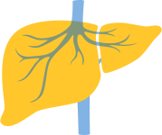

El cáncer de hígado es una enfermedad silenciosa, pero si se detecta en estadios iniciales es potencialmente curable.1

Todos los pacientes con cirrosis hepática necesitan vigilancia estrecha.1
Cada 6 meses debe realizarse una ecografía del hígado para detectarla.2
Para que más personas conozcan esta información
1. Cáncer de hígado: una guía para pacientes - Basada en la Guía de Práctica Clínica de la ESMO – v.2014.1. Consultado el 11 de septiembre de 2020. Disponible en: https://www.esmo.org/content/download/6612/115091/file/ES-Cancer-de-Higado-Guia-para-Pacientes.pdf 2. Marrero K, Kulik L, et al. Diagnosis, staging, and management of hepatocellular carcinoma: 2018 practice guidance by the American Association for the Study of Liver Diseases. Hepatology. 2018;68(2):723-750
M-CO-00001583